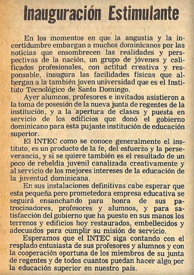
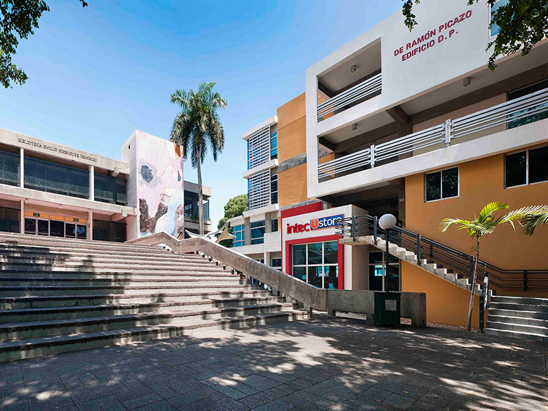
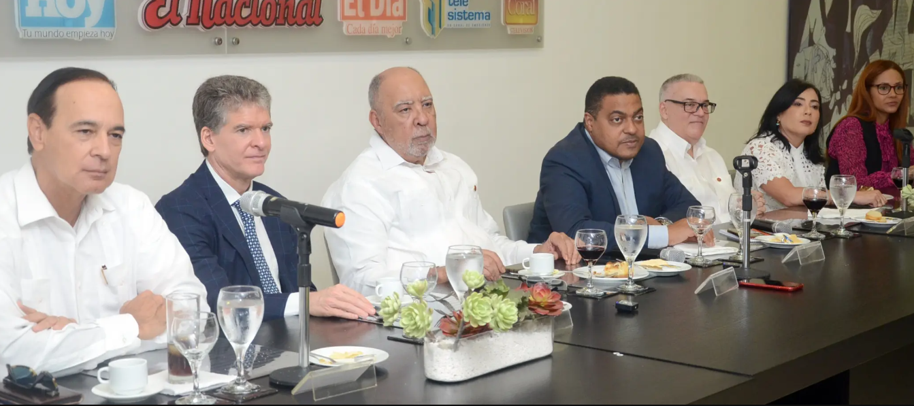
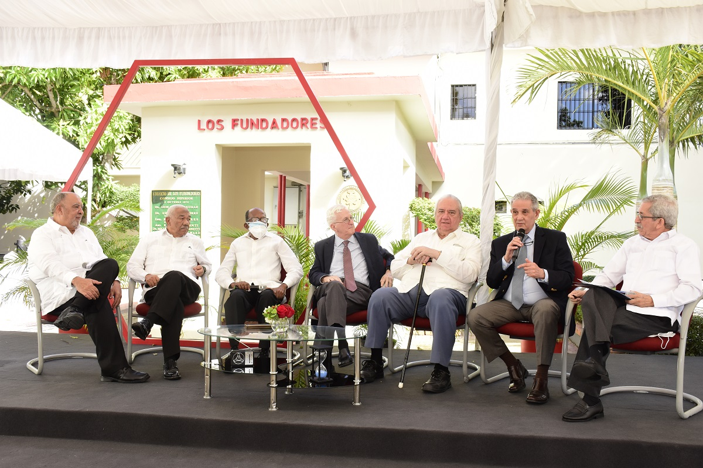
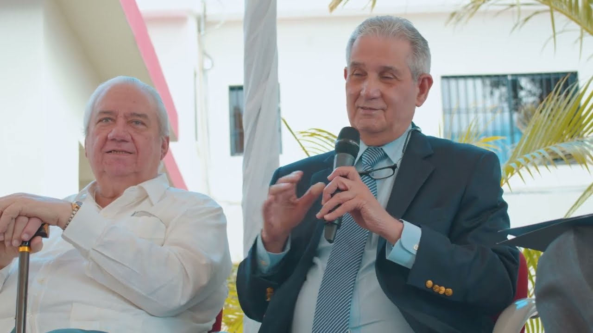
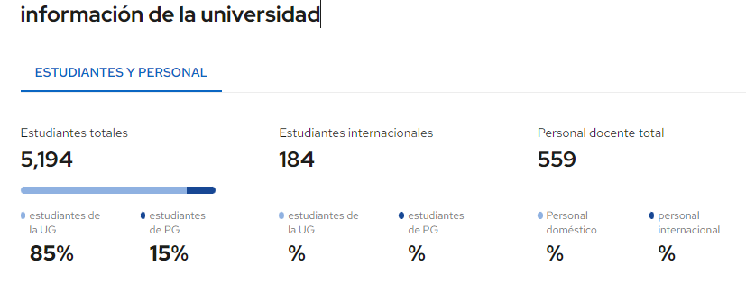

El Instituto Tecnológico de Santo Domingo, INTEC, es una institución dominicana de educación superior privada de servicio público, sin fines de lucro, fundada en 1972 por un grupo de académicos comprometidos con la transformación social del país y la promoción continua de la calidad de la vida de sus habitantes.
Se caracteriza por la innovación y la complementariedad de su oferta académica en las áreas de Ingenierías, Negocios, Ciencias de la Salud, Ciencias Básicas y Ambientales y Ciencias Sociales y Humanidades.
Esta inquietud se materializó con el inicio de las actividades docentes el 9 de octubre de 1972, impartiendo tres programas de postgrado: Ingeniería Industrial, Economía y Administración de Empresas, tras innumerables esfuerzos realizados por el grupo, como la obtención de un préstamo de 900 pesos en la Fundación de Crédito Educativo, de las aulas del Colegio Dominicano de La Salle y de los propios aportes personales, logrando con ello convertir al INTEC en la primera institución del país en ofrecer ese nivel de estudios.
En julio de 1973 se integran a la oferta los programas de licenciatura en Ingeniería Civil, Ingeniería Industrial, Medicina, Economía, Administración, Contabilidad y Ciencias Sociales.
El crecimiento de la matrícula de licenciatura fue lento. Al final del segundo trimestre de docencia se aplicó la baja académica según el Reglamento Académico y quedó fuera del INTEC el 60 % de la población de licenciatura. Este éxodo estudiantil afirmó la imagen de INTEC como una institución con altos estándares de exigencia.
El 96 por ciento de los egresados del Instituto Tecnológico de Santo Domingo (INTEC) se inserta en el mercado laboral antes de cumplirse el año de su graduación, y un 66 % previo a obtener el título.
Los datos fueron obtenidos de la Encuesta de Empleabilidad de Egresados 2021 realizada por la Dirección de Planificación y Calidad y la Unidad de Relaciones con Egresados de esa universidad.
El sondeo lo realizó esa academia para conocer la trayectoria profesional y el posicionamiento en el mercado laboral de los egresados, y reveló que el 92.85 % se desarrolla en su área de estudio; 70 % en el sector privado y 13.61 % en el público.
Julio Sánchez Maríñez, rector de la institución, citó esa fortaleza entre otros importantes logros alcanzados en los 50 años que conmemora el INTEC, entidad mejor posicionada en el Ranking Mundial QS, ocupando el lugar 801-1000 de las 1,400 mejores universidades.
El Acta Constitutiva es el primer documento oficial del INTEC y su firma permitió iniciar los esfuerzos por la formalización del INTEC, además de que sirvió de base para la gestión de la incorporación del INTEC como institución sin fines de lucro, con personería jurídica.
La historia de excelencia académica y aportes a la sociedad del Instituto Tecnológico de Santo Domingo (INTEC) tuvo su génesis un 9 de marzo de 1972, cuando se materializó la visión de tres profesores universitarios de formar una institución que ofreciera programas de postgrado en áreas no tradicionales, idea que se concretó con la firma de un Acta Constitutiva.
Cinco décadas después, la Plazoleta de Los Fundadores del campus fue el escenario en que Ramón Flores, Miguel Ángel Heredia Bonetti, Manuel Cocco, Bernardo Defilló y José Joaquín Puello Herrera, miembros fundadores del INTEC, volvieron a estampar su firma, de manera simbólica, en una Acta Constitutiva, misma que también rubricaron el rector, Julio Sánchez Maríñez; miembros de la Junta de Regentes, pasados rectores, vicerrectores, miembros del Consejo académico, directivos, profesores, egresados, estudiantes y colaboradores.
Al pronunciar la bienvenida, el rector del INTEC se expresó emocionado de “renovar los votos que dieron inicio a esta aventura que fue el INTEC, y que es esta vibrante realidad, debe ser un momento de profunda reflexión”. Sánchez Maríñez citó al escritor francés Victor Hugo: “cambia de opinión, mantén tus raíces”, al tiempo de motivar a la comunidad a continuar innovando, sin olvidar los principios y los valores de los fundadores.
Al participar en el panel “Constitución del INTEC: 50 años después”, el primer rector del INTEC, Ramón Flores, indicó que INTEC es el resultado de un grupo que convirtió en decisión el sueño de mucha gente de crear la institución, pero que solo tenía la voluntad y la imaginación. “Para aquellos que participamos en esos primeros años, el INTEC dejó huellas en nuestra vida, nos enriqueció y hoy diría que aquellos sueños fueron concretados de una manera exitosa.”
De su lado, Miguel Ángel Heredia Bonetti puntualizó que el grupo que sentó las bases del INTEC, profesionales que continuaron o realizaron su formación en el extranjero, estaba convencido de que el país y el mundo necesitaba una transformación. “Creíamos arrogantemente que teníamos algo que aportar a la transformación de la educación superior dominicana en beneficio de la sociedad”, expresó el miembro del grupo promotor y creador del INTEC
El Instituto Tecnológico de Santo Domingo (INTEC) es la universidad dominicana mejor posicionada en el prestigioso Ranking Mundial QS, al que ingresó hoy ocupando la posición 801-1000 de entre las 1400 mejores universidades del mundo que lograron entrar a la clasificación realizada por la empresa británica Quacquarelli Symonds (QS).
Pasando balance a la trayectoria de la casa de estudios superiores, Sánchez Maríñez dijo que de los 35 mil egresados, 4 mil de estos son del área de ingeniería y el 32 % corresponde a negocios.
“La historia del país fuera distinta si el 36 por ciento de esos egresados, 12 mil no fueran de ingeniería y lo son, y el 32 por ciento son de negocios. Si miramos la matrícula de educación superior, el 70 % está en cuatro áreas: negocios, humanidades, educación y salud”, refirió el rector, quien afirmó que manejan un presupuesto de un millón de pesos mensual, y pide al Gobierno impulsar unos 26 proyectos que tienen en carpeta. Gastan RD$25 millones en becas con apoyo de otras entidades.
Maríñez adelantó que INTEC se encamina en sus próximos 50 años hacia la excelencia académica dado su compromiso con la formación, ponderando que en mayo pasado graduaron los primeros ingenieros en Logística y Transporte de Carga e Ingenieros Biomédicos, igual el primer grupo de diez en Ciberseguridad; Ciencias de Datos y Biotecnología.